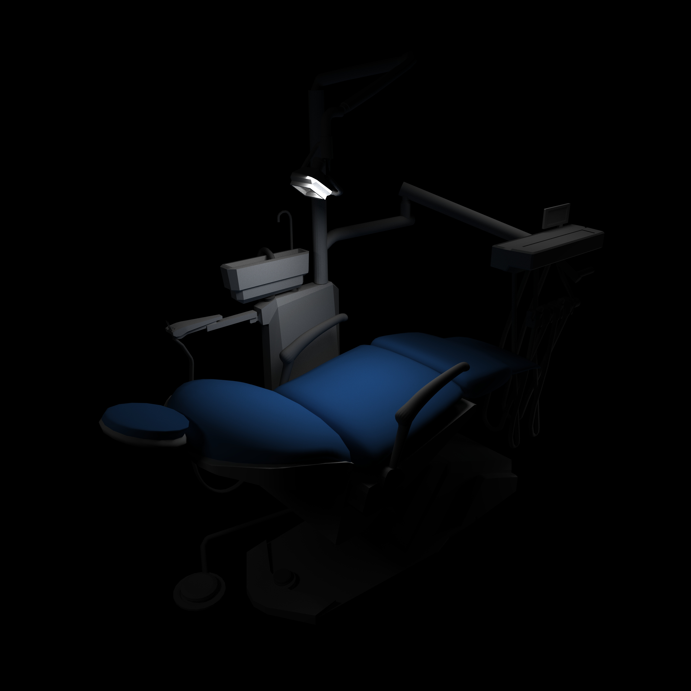
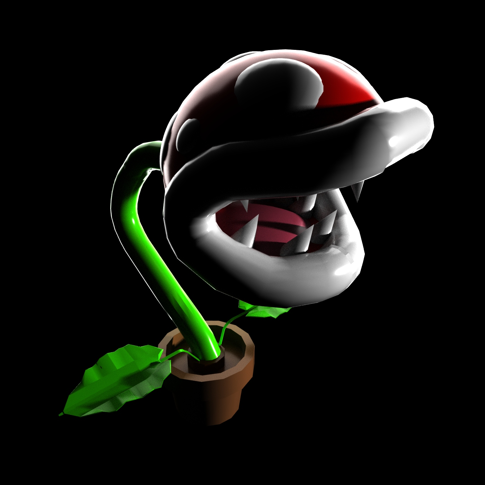
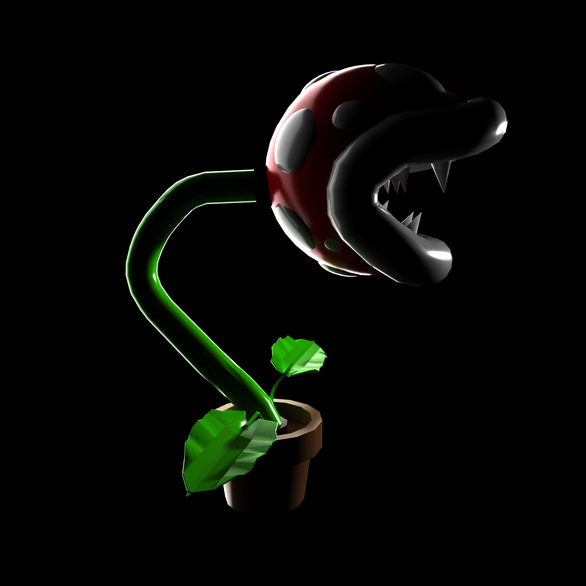

"MARIO PLANT"
7.23.20
Nintendo had created the infamous Phiranna Plant which would always try to attack the user. Making this model made me have a view prospective on this plant and how it would look if it was in real life.